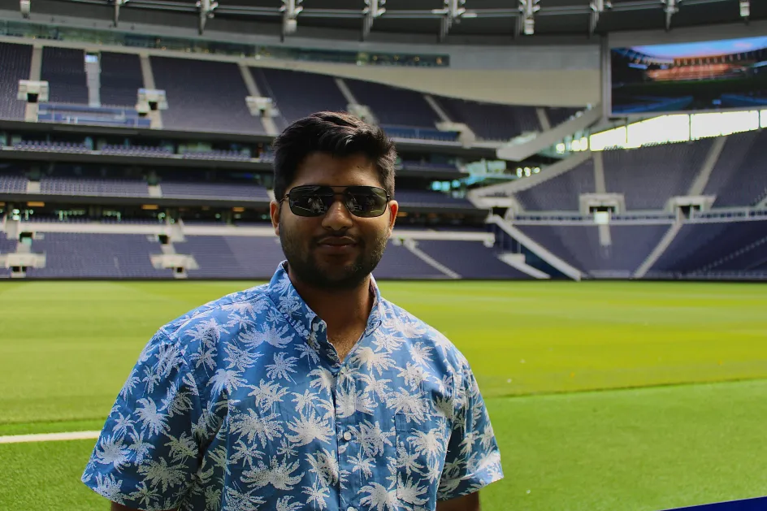
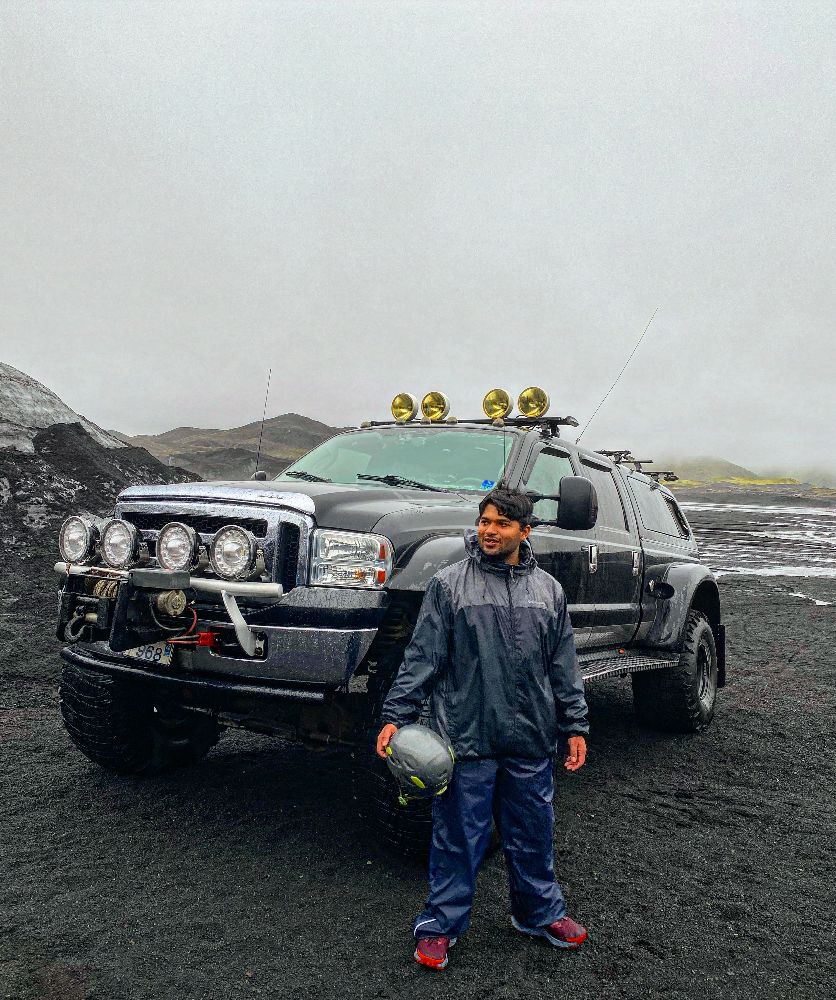

Bio
Born in India, my family permanently moved to the United States in 4th grade to pursue the American Dream. I found my passion in robotics and automation in freshman year of high school through the VEX and FIRST programs. I decided to continue my studies to become a computer engineer at the University of Pittsburgh focusing on projects that excited me. This has led me to work on a diverse range of projects including rovers, underwater snake robots, and racecars. I currently work on embedded systems at the Carnegie Mellon University Robotics Institute.
Outside of my engineering pursuits, I have a deep passion for the outdoors and traveling. As an Eagle Scout, I have cultivated a strong appreciation for nature and adventure, which has instilled in me a love for camping, hiking, and exploring the great outdoors. These experiences have not only enhanced my skills in navigation and survival but also fostered a sense of teamwork and leadership. Traveling allows me to immerse myself in different cultures and landscapes, broadening my perspective and inspiring my creativity. Whether I'm trekking through a national park or discovering a new city, I find joy in the journey and the stories that come with it. In addition to my outdoor adventures, I also enjoy cooking whenever I have the time. Experimenting with new recipes and flavors is a rewarding creative outlet for me. I love the process of preparing meals, whether for myself, family, or friends, and I appreciate how cooking brings people together. Overall, these interests not only enrich my personal life but also contribute to my problem-solving skills and ability to adapt—qualities that I value in my engineering career.